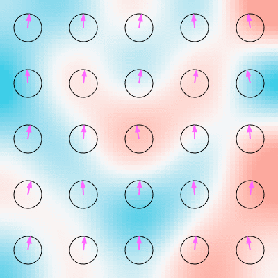
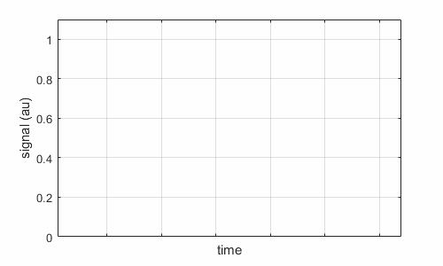
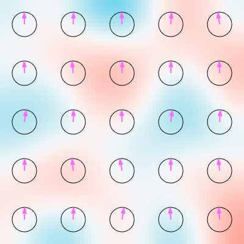
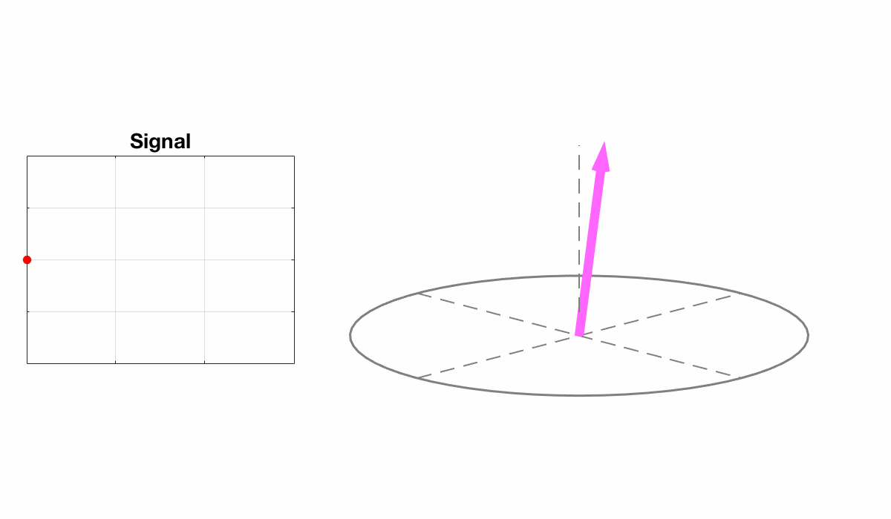
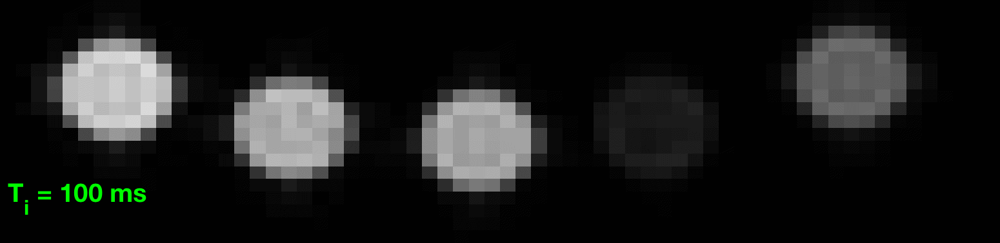
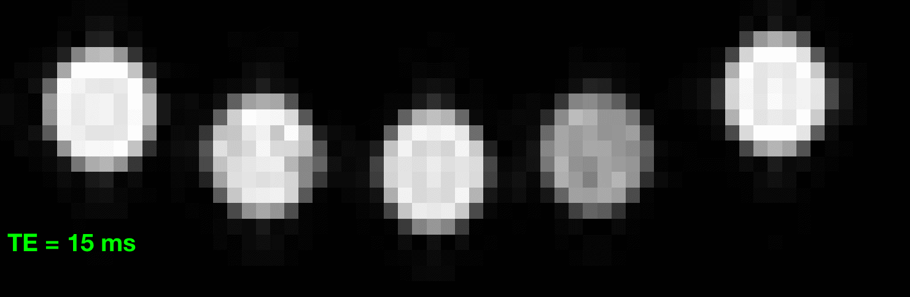
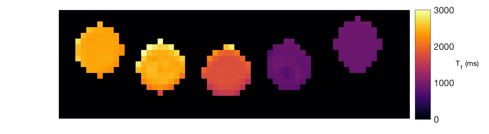
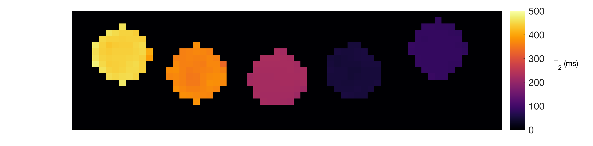

# MRI physics, UG level
## NMR basics
On this page, the pink (or sometimes purple) arrow corresponds to induced nuclear magnetization \\(\mathbf{M}\\). If a **circularly polarized** B1 field - \\( \mathbf{B} = [B_1 \cos \omega t \quad -B_1 \sin \omega t \quad B_0] \\) is applied, then \\(\mathbf{M}\\) can be made to rotate down away from equilibrium (aligned with z).
<img src="images/Bloch_Bminus_lab.gif" width="50%">
If you'd like to see more, look at the [grad level MRI intro page](teaching-mri-intro.html).
### Relaxation Effects
Magnetization returns to thermal equilibrium by multiple means, resulting in longitudinal recovery with time constant T1 and transverse decay with time constant T2.
#### Longitudinal relaxation
<img src="images/M_bloch_t1.gif" width="50%">
#### Transverse relaxation
<img src="images/M_bloch_t2graph.gif" width="50%">
Transverse relaxation can be subdivided into irreversible decay due to random interactions (T2):
<img src="images/M_bloch_t2.gif" width="30%">
and reversible decay due to microscopic (but constant) field perturbations (T2'):
<img src="images/M_bloch_t2prime.gif" width="30%">
The reversible decay can be recovered by applying a second RF pulse to form a **SPIN ECHO**
<img src="images/M_spin_echo.gif" width="90%">
More generally, after excitation by 90 degree pulse, the magnetization will return to equilibrium by a combination of T1 and T2 relaxation. This is called a **Free Indunction Decay (FID)**
<img src="images/FID_lab.gif" width="60%">
Note that \\(\mathbf{M}\\) *does not* rotate back to equilibrium - the transverse and longitudinal relaxation components are independent. Note also that the Larmor frequency here is exaggeratedly small. In reality \\(\omega\\) is in the range of 100MHz, making one period of rotation about 10ns, whereas the relaxation times are in the range of 10s to 100s of milliseconds. Hence the precession rotation depicted here would in reality be much faster (this is true for all the diagrams on this page) but has been slowed down to make easier to interpret.
#### Relaxation rates and correlation times
Transverse and longitudinal relaxation are caused by the fluctuating local fields experienced by each spin moment. Taking a simplistic view, longitudinal relaxation is caused by the transverse component of the local fields, while transverse relaxation relates to the longitudinal component of the local fields. The latter effect is more straightforward to visualise. Imagine that a collection of spins experiences very slowly varying fluctuating background field as shown below:


The arrows correspond to the precessing phases of the spin moments - imagine we are looking down on them from above so we can see the transverse component. The colours correspond to the local strength of the magnetic field (longitudinal component) - red means slightly more than the applied B0 and blue means slightly less. The fluctuations cause the precession frequency of the spins to locally speed up and slow down. The result (exaggerated here for bigger effect) is that the spins rapidly lose phase coherence, hence the overall signal (which is the aggregate from all of them) will be lower. The plot shows how the vector sum of the individual components goes down over time - *note that in an ideal world with a very large number of spins and corrcet distribution of frequencies this would be an exponential decay, whereas in our simple model it doesn't do this*. Thus a long coherence time corresponds to a **short T2 time**.
Now imagine the opposite scenario where we have very rapidly fluctuating fields:

The fields have the same strength, but since the fluctuations are fast they don't accumulate a big difference on the spins phase over time. In this example the fast fluctuation (i.e. short correlation time) gives rise to a **long T2 time**. With reference to above, the T2' (reversible) decay corresponds to background fields that are not time varying. The T2 decay (irreversible) corresponds to all randomly temporally fluctuating fields.
<br>
<br>
## Spatial Encoding
### Gradient Waveforms
Applied gradient fields can be characterized by a time variable waveform:
<img src="images/output_sDdnMn.gif" width="90%">
<br>
### Spin Warp method
Imagine we are imaging an object with this spin density:
<img src="images/spinwarpVD_density.png" width="25%">
After excitation, the transverse magnetization is precessing when viewed in the laboratory frame:
<img src="images/spinwarp_VD_larmor.gif" width="25%">
If a gradient is applied in the x-direction (Left to Right) we get spatial variation in precession frequency that means some move faster and some slower than the Larmor frequency:
<img src="images/spinwarp_VD_larmor_Gx.gif" width="25%">
If a gradient is applied in the y-direction, the same is true:
<img src="images/spinwarp_VD_larmor_Gy.gif" width="25%">
**Phase Encoding** involves applying gradients first in one direction and then another. This is best described in the k-space formalism and results in a combination of the above effects. The observed signal is always the integral over the entire sample, for example:
<img src="images/spinwarp_VD_larmor_Gx_plot.gif" width="25%">
This will be different for each applied gradient, and each gradient maps out a trajectory in k-space. We can plot the signals as a function of k, and then use an inverse FT to reconstruct the image.
<br>
<br>
## Steady state behaviour
If a sequence uses rapidly repeated RF pulses then magnetization does not have time to recover from one excitation to the rest. The result is that a dynamic equilibrium is reached, in which the longitudinal magnetization is less than the maximum available. For example, see the sequence below:

This is called saturation. If the repetition time is reduced, the effect is worse, and the steady-state magnetization is even smaller - the result from imaging would be lower signal.
We find that in this case reducing the flip angle (below: from 90 to 60 degrees) can lead to an increase in signal, since the saturation effect is reduced
<br>
<br>
## Quantitative MRI
In lectures we looked at an example of trying to measure the T1 and T2 of some different samples in test-tubes. Below are the images obtained using inversion recovery for different delay times (Ti):

Below are the same tubes, this time scanned with spin echo sequences using different echo times:

In both cases we calculate T1 and T2 for each pixel, using the relevant signal equation.
Below, T1:

Below, T2:

(c) Shaihan Malik 2017